Reconstructing Hands in 3D with Transformers —— 单目手部网格恢复的"规模化"答卷:全 Transformer 架构(ViT-H)+ 2.7M 混合标注数据,in-the-wild 遮挡关节 PCK@0.05 达此前方法 2-3 倍
问题:从单目 RGB 图像/视频帧恢复 3D 手部网格。方法:HaMeR 采用全 Transformer 设计 —— 大容量 ViT-H 骨干 + Transformer 解码头,直接回归 MANO 手模型的姿态 $\theta\in\mathbb{R}^{48}$、形状 $\beta\in\mathbb{R}^{10}$ 与相机参数 $\pi$;配合 10 个数据集混合而成的 2.7M 训练样本(FrankMocap 训练集的 4 倍),用「数据规模化 + 模型规模化」这一朴素策略换取精度与鲁棒性。结果:在 FreiHAND / HO3Dv2 两个受控基准上达到 SOTA;在作者新构建的 in-the-wild 标注集 HInt(40.4K 手,86.7% 处于自然接触状态)上,PCK@0.05 较此前方法提升 2-3 倍,其中被遮挡关节子集上提升最为悬殊(如 New Days 子集 27.2 vs 最强基线 13.7)。
把手部网格恢复做成了一道"scaling 题":无需精巧结构,只要把训练数据(×4)与模型容量(ResNet50 → ViT-H)同时放大,遮挡、交互、艺术画、手套、机械手等此前让专用方法崩坏的场景被一并扫平 —— 消融实验(Table 5)证明两个因素独立有效且叠加近线性。
① HaMeR 是纯单帧方法,无任何时序模块,论文宣称视频上"时序稳定"仅有补充视频定性证据,无量化指标;② HaMeR 网络本体不输出置信度/不确定性,源码中唯一的置信度来自前置 ViTPose 的 2D 关键点分数;③ 推理依赖 Detectron2(人检测)+ ViTPose(全身关键点)两级前置,手部 bbox 由手腕关键点生成,任一级失败都会级联。
METRO、MeshGraphormer、I2L-MeshNet 等非参数方法直接回归 MANO 顶点,论文指出其"align better with the image evidence, but more prone to failure in cases of occlusions and truncations"(§2)。遮挡截断恰是手部最常态的观测条件。
FreiHAND/HO3D 等 benchmark 采集于多机位受控环境,模型在其上趋于饱和,但无法反映 in-the-wild 性能。论文实验证实:受控集上各方法差距小,一到 HInt(YouTube/Ego4D/VISOR 真实帧)上基线 PCK@0.05 全部跌到 10-17 分(表 3)。
手是小目标、高自由度(21 关节)、高频自遮挡(手-物/手-手交互)对象;HInt 标注统计显示其 86.7% 的手处于自然接触状态 —— "无遮挡的手"才是特例。
作者的赌注是:手部重建的痛点不是缺"巧结构",而是缺"规模"。证据链来自 HMR2.0(人体 mesh 恢复)在同样"简单结构 + 大模型 + 大数据"配方下的成功(§1)。关键假设:海量多样数据里已经"见过"足够多的遮挡模式,大容量模型能把这些模式内化为先验 —— 因此遮挡关节可以"脑补"。假设失效条件:遇到训练分布之外的手部状态(极端姿态、罕见交互物),此时先验会产出"合理但错误"的重建 —— 项目页自报失败模式(极端姿态、左右手误分)与此一致(图 6)。
专用方法的对照:论文在 §2 明确将自己定位与 MobRecon(速度)、HandOccNet(遮挡专用结构)、AMVUR(概率化)、BlurHand(运动模糊)等"特性化"工作正交 —— HaMeR 不做专门设计,而是验证 scaling 本身的收益,并宣称这些特化设计可与其组合。值得注意的是,HandOccNet(遮挡专用)在 HInt 遮挡子集上反而全场最差(7.2-9.8,表 3),为"遮挡鲁棒性来自数据规模而非结构设计"提供了反向证据。
输入:单张 RGB 图像 $I$(demo 中经检测-裁剪得到手部 crop,尺寸 $256\times192$)。输出:MANO 参数 $\Theta=\{\theta,\beta,\pi\}$ —— 姿态 $\theta\in\mathbb{R}^{48}$、形状 $\beta\in\mathbb{R}^{10}$、相机平移 $t\in\mathbb{R}^{3}$;经 MANO 函数 $\mathcal{M}(\theta,\beta)$ 得到手部网格 $M\in\mathbb{R}^{778\times 3}$ 与 21 个 3D 关节 $X\in\mathbb{R}^{21\times 3}$。
| 符号 | 含义 | 维度/取值 |
|---|---|---|
| $I$ | 输入手部 crop(Detectron2+ViTPose 前置产出) | $256\times192\times3$(vit.py:14) |
| $\theta$ | MANO 姿态参数(全局朝向 + 15 关节 × axis-angle) | $\mathbb{R}^{48}$ |
| $\beta$ | MANO 形状参数(PCA 系数) | $\mathbb{R}^{10}$ |
| $\pi,\ t$ | 弱透视相机,实际回归平移 $t$ | $\mathbb{R}^{3}$ |
| $\mathcal{M}(\theta,\beta)$ | MANO 函数(模板 + 形状/姿态 blendshape + LBS) | → $M\in\mathbb{R}^{778\times3}$, $X\in\mathbb{R}^{21\times3}$ |
| $x$ | 2D 关节投影,$x=\Pi_K(X+t)$ | $\mathbb{R}^{21\times2}$ |
| $D_k$ | 对抗判别器(形状/姿态/逐关节) | 源码 models/discriminator.py |
MANO_RIGHT.pkl);cam_crop_to_full 从 crop 坐标系换算回全图;镜像结果按 $(2\cdot right-1)$ 符号翻回。| 数据流 | 内容 |
|---|---|
| 输入 | 姿态 $\theta\in\mathbb{R}^{48}$(1 全局 + 15 关节 × 3 轴角),形状 $\beta\in\mathbb{R}^{10}$ |
| 算子 | 模板网格 + 形状 blendshape + 姿态 blendshape + LBS 蒙皮 |
| 输出 | 网格 $M\in\mathbb{R}^{778\times3}$,关节 $X\in\mathbb{R}^{21\times3}$(含 4 指尖等,21 = 1 腕 + 5 指 × 4) |
models/mano_wrapper.py 封装,仅加载 MANO_RIGHT.pkl(左手经镜像统一,见 §7);MANO 模型需到官网注册下载(license 约束,不能随代码分发)。该模块的监督信号:有 3D GT 时直接回归 $\theta^*,\beta^*$ 与 $X^*$($\mathcal{L}_{3D}$);无 3D 时经投影 $x$ 受 2D 关键点监督($\mathcal{L}_{2D}$)+ 对抗先验($\mathcal{L}_{adv}$)约束参数落在自然手势流形内。
| 数据流 | 规格(源码真值,models/backbones/vit.py:14-17) |
|---|---|
| 输入 | 手部 crop,img_size $=(256,192)$ —— 非正方形,与 demo crop 的宽高比一致 |
| Patch 化 | patch_size $=16$ → token 数 $= (256/16)\times(192/16)=16\times12=192$ |
| 主干 | embed_dim $=1280$,depth $=32$,num_heads $=16$(ViT-H/16 规格) |
| 初始化 | ViTPose 预训练权重(hamer_vit_transformer.yaml: PRETRAINED_WEIGHTS: hamer_training_data/vitpose_backbone.pth),非 ImageNet 初始化 |
| 输出 | tokens $[B,192,1280]$,交予解码头 |
消融(Table 5)显示:仅把 ResNet50 换成 ViT-H(数据不变),HInt All-PCK@0.05 在三个子集上分别 +9.0 / +6.6 / +5.5;仅把数据 ×4(模型不变),提升 +14.4 / +12.4 / +10.8;两者叠加后达到 48.0 / 43.0 / 38.9 —— 数据规模贡献更大,但两者互补。另外源码揭示一个论文未强调的细节:骨干用 ViTPose(2D 姿态估计预训练)初始化,等于把 2D 关键点知识"免费"注入 3D 回归,这很可能也是涨点来源之一【推测:论文未消融 ViTPose 初始化 vs ImageNet 初始化】。
该模块的监督信号:无独立监督,梯度来自解码头回传的 $\mathcal{L}_{3D}+\mathcal{L}_{2D}+\mathcal{L}_{adv}$。
| 数据流 | 规格(源码真值,configs_hydra/experiment/hamer_vit_transformer.yaml) |
|---|---|
| 输入 | ViT tokens $[B,192,1280]$(context_dim $=1280$) |
| 结构 | Transformer decoder:depth $=6$,heads $=8$,mlp_dim $=1024$,dim_head $=64$;单个可学习 query token,cross-attend 全部图像 tokens |
| 输出头 | IN_CHANNELS $=2048$ → 回归 $\Theta=\{\theta(48),\beta(10),t(3)\}$,共 61 维 |
models/hamer.py 与 demo.py,网络不输出任何置信度、方差或假设分布(对比 AMVUR 的概率化设计)—— 这是本 pipeline 适配时必须自行补的缺口(§14)。该模块的监督信号:$\mathcal{L}_{3D}$(参数 + 3D 关节)+ $\mathcal{L}_{2D}$(重投影)+ $\mathcal{L}_{adv}$(对抗)。
论文只描述了"网络本体",实际可用系统(demo.py)是四级级联,任一环节失败都会吞掉该帧的手:
demo.py:45-62):Detectron2,默认 ViTDet-H Cascade Mask R-CNN(test_score_thresh=0.25),可选 RegNetY-4GF(更快、更省显存);实例过滤 pred_classes==0 & scores>0.5(demo.py:85);keypoints[-42:-21](左)/ [-21:](右)(demo.py:99-100);demo.py:103-113):关键点置信度 keyp[:,2] > 0.5 且有效点 > 3 才保留该手,bbox = 有效点 min/max,再 ×2.0 外扩(--rescale_factor 默认 2.0);multiplier=(2*right-1) 翻回(demo.py:140),故仅需右手 MANO;cam_crop_to_full(utils/renderer.py)换算回全图坐标。手部 bbox 依赖 ViTPose 的手腕/手部关键点;当手被遮挡或运动模糊时,ViTPose 置信度先崩,bbox 直接不生成 —— 该帧 HaMeR 根本没有运行机会。也就是说 HaMeR 论文里强悍的遮挡重建能力,只能作用于"被检测到的手";检测召回是系统真正的第一瓶颈(项目页自报失败模式第一条即 spurious hand detections,图 6)。对视频手部重建 pipeline,必须用全视频检测追踪(而非逐帧独立检测)来兜底召回,见 §14。
该模块的监督信号:推理 pipeline 无监督(纯前向);训练阶段不涉及 Detectron2/ViTPose(训练 crop 来自 GT 标注)。
| 损失项 | 公式 | 源码权重(hamer_vit_transformer.yaml) | 作用 |
|---|---|---|---|
| $\mathcal{L}_{3D}$ | $\|\theta-\theta^{*}\|_2^2 + \|\beta-\beta^{*}\|_2^2 + \|X-X^{*}\|_1$ | GLOBAL_ORIENT $=10^{-3}$ · HAND_POSE $=10^{-3}$ · BETAS $=5\times10^{-4}$ · KEYPOINTS_3D $=0.05$ | 3D GT 数据集上的参数与关节直接监督 |
| $\mathcal{L}_{2D}$ | $\|x-x^{*}\|_1$(投影关节 vs 2D 标注) | KEYPOINTS_2D $=0.01$ | 2D 数据集监督;有 3D 时也启用(促进图像空间一致性) |
| $\mathcal{L}_{adv}$ | $\sum_k (D_k(\Theta)-1)^2$ | ADVERSARIAL $=5\times10^{-4}$ | 仅有 2D 时防止"重投影正确但不自然"的姿态;判别器分形状/姿态/逐关节三类(models/discriminator.py) |
训练超参(hamer_vit_transformer.yaml):总步数 1M steps,batch $=8$,LR $=10^{-5}$,weight decay $=10^{-4}$;数据增广含 2D 姿态噪声比 0.01、参数噪声比 0.005。论文 §3.4 只给了损失形式、未给权重,上表权重为源码真值 —— 这是"宣称 vs 实现"核对中源码提供增量信息的典型位置。
| 项 | 值 | 出处 |
|---|---|---|
| Python | 3.10(venv/conda 均可) | README.md:28 |
| CUDA | 11.7(README 示例,可适配) | README.md:38-39 |
| 关键依赖 | Detectron2(检测)+ ViTPose(关键点,需 pip install -v -e third-party/ViTPose) | README.md:41-42 |
| MANO | 需官网注册下载 MANO_RIGHT.pkl 放 _DATA/data/mano/(license 不可分发) | README.md:50 |
| checkpoint | bash fetch_demo_data.sh 下载(含 HaMeR 权重与 ViTPose backbone) | README.md:46-48 |
| 项 | 论文宣称 | 源码真值 | 出处 |
|---|---|---|---|
| 骨干 | ViT-H(§3.3) | ViT-H/16:dim 1280, depth 32, heads 16, patch 16, img (256,192);ViTPose 预训练初始化 | backbones/vit.py:14-17; hamer_vit_transformer.yaml |
| 输入分辨率 | 未写明 | $256\times192$(非方形) | vit.py:14; MODEL.IMAGE_SIZE: 256 |
| 解码头 | transformer decoder(§3.3) | depth 6, heads 8, mlp_dim 1024, dim_head 64, context_dim 1280 | hamer_vit_transformer.yaml |
| 训练步数/batch | 未写明 | 1M steps, batch 8, LR 1e-5, WD 1e-4 | hamer_vit_transformer.yaml |
| 损失权重 | 未给 | 3D 关节 0.05 / 2D 0.01 / 全局朝向 1e-3 / 姿态 1e-3 / β 5e-4 / 对抗 5e-4 | hamer_vit_transformer.yaml |
| 置信度输出 | 未宣称 | 无(网络本体不输出不确定性;demo 中唯一置信度是 ViTPose 关键点分数 keyp[:,2]) | demo.py:103 通读 hamer.py 确认 |
demo.py:103-113)—— 遮挡/模糊严重时手根本进不了网络,逐帧跑视频会大量丢帧;--rescale_factor 2.0(demo.py:30):crop 上下文占比大,极端贴近画面边缘的手可能被截断;| 方法 | PA-MPJPE↓ (mm) | PA-MPVPE↓ (mm) | F@5↑ | F@15↑ |
|---|---|---|---|---|
| METRO | 6.5 | 6.3 | 0.731 | 0.984 |
| Mesh Graphormer | 5.9 | 6.0 | 0.764 | 0.986 |
| MobRecon | 5.7 | 5.8 | 0.784 | 0.986 |
| HaMeR (Ours) | 6.0 | 5.7 | 0.785 | 0.990 |
⚠️ 诚实呈现:FreiHAND 上 HaMeR 的 PA-MPJPE(6.0)并非最低(MobRecon 5.7 更低),优势在 mesh 级指标(F@15 0.990)。这印证论文自己的判断:受控基准已饱和,野外集才能拉开差距。
| 方法 | AUC_J↑ | PA-MPJPE↓ | F@5↑ | F@15↑ |
|---|---|---|---|---|
| HandOccNet | 0.819 | 9.1 | 0.564 | 0.963 |
| AMVUR | 0.835 | 8.3 | 0.608 | 0.965 |
| HaMeR (Ours) | 0.846 | 7.7 | 0.635 | 0.980 |
HO3Dv2(手-物交互、遮挡重)上全面领先,PA-MPJPE 较最强基线 AMVUR 降 7.2%(8.3→7.7,按表格原始值复核)。
| 子集 | 方法 | New Days @0.05 | VISOR @0.05 | Ego4D @0.05 |
|---|---|---|---|---|
| All Joints | FrankMocap | 16.1 | 16.8 | 13.1 |
| Mesh Graphormer | 16.8 | 19.1 | 14.6 | |
| HaMeR | 48.0 | 43.0 | 38.9 | |
| Visible Joints | FrankMocap | 20.1 | 20.4 | 16.3 |
| Mesh Graphormer | 22.3 | 23.6 | 18.4 | |
| HaMeR | 60.8 | 56.6 | 52.0 | |
| Occluded Joints | FrankMocap | 9.2 | 11.0 | 8.4 |
| HandOccNet(param) | 7.2 | 7.4 | 8.0 | |
| HandOccNet(no param) | 9.8 | 9.9 | 9.6 | |
| HaMeR | 27.2 | 25.9 | 23.0 |
可见关节上 HaMeR 约为基线 2.7-2.8 倍;遮挡关节上 HaMeR 27.2/25.9/23.0 vs 最强基线(HandOccNet-no param)9.8/9.9/9.6 —— 2.4-2.8 倍,而专门为遮挡设计的 HandOccNet(param 版)反而全场最低(7.2-8.0)。机制解释:遮挡关节没有图像证据,只能靠"见过的手势先验"补全;大模型 + 2.7M 数据把这个先验学得足够强,专用结构设计在小数据上学不出这种先验。这正是 §2 核心洞察的实验闭环。注意绝对水平:遮挡关节 PCK@0.05 仅 23-27,即约 3/4 的被遮关节重建偏差仍大于 5% 手掌长度 —— "远超基线"不等于"已解决",视频应用必须配合时序约束(§14)。
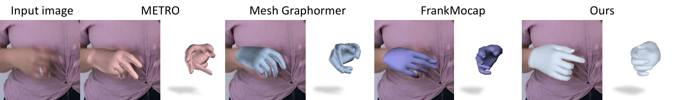
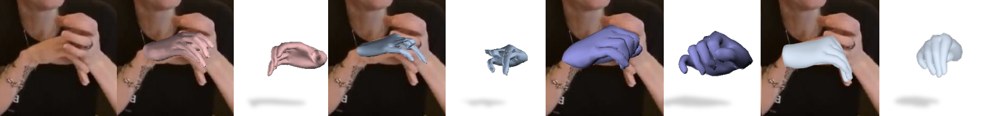
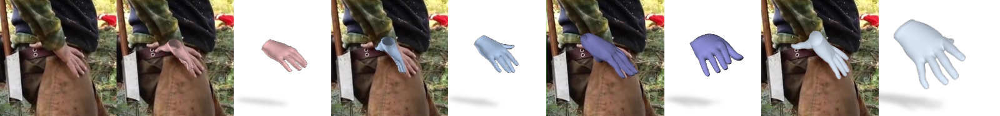
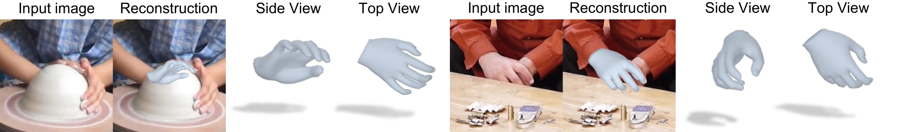
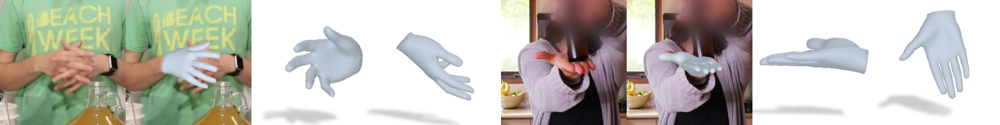
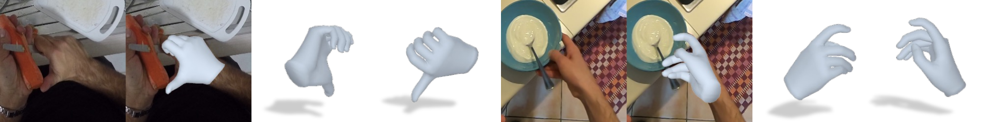
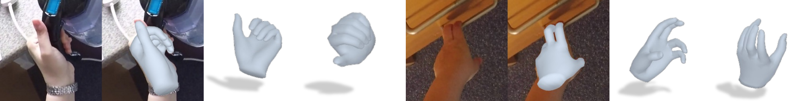
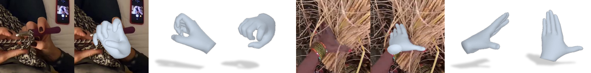
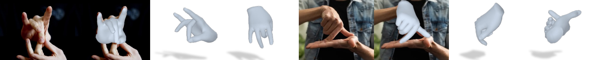
| 配置 | 大数据 ×4 | 大模型 ViT-H | New Days | VISOR | Ego4D |
|---|---|---|---|---|---|
| Base(类 FrankMocap 复现) | ✗ | ✗ | 16.9 | 17.5 | 13.9 |
| + 仅大数据 | ✓ | ✗ | 31.3 (+14.4) | 29.9 (+12.4) | 24.7 (+10.8) |
| + 仅大模型 | ✗ | ✓ | 25.9 (+9.0) | 24.1 (+6.6) | 19.4 (+5.5) |
| HaMeR(两者) | ✓ | ✓ | 48.0 (+31.1) | 43.0 (+25.5) | 38.9 (+25.0) |
两个因素独立有效、叠加增益近线性(复核:14.4+9.0=23.4 vs 实际 31.1,New Days 上甚至有超线性成分)。数据规模的单项贡献大于模型规模。
Ours*(混入 HInt 训练集)在 VISOR/Ego4D(第一人称)上提升显著(如 VISOR Occluded @0.05:25.9→42.6),New Days(第三人称)提升较小 —— 说明此前训练集里几乎没有 ego 视角手部数据,视角分布缺口比标注精度更影响泛化。对 vggt_human 的镜像启示:环绕第三人称素材恰在 HaMeR 训练分布的优势区。
| 方法 | 年份 | 输入假设 | 表示 | 监督信号 | 训练数据 | 训练时长 | 推理耗时 | 显存 | 关键指标 | 开源 |
|---|---|---|---|---|---|---|---|---|---|---|
| FrankMocap | 2020 | 单目 RGB | MANO 参数回归 | 3D+2D | ~675K(论文§3.5 推算) | — | 快(ResNet50) | 低 | HInt PCK@0.05 ≈13-17 | ✅ |
| METRO | 2021 | 单目 RGB | 顶点直回归(非参数) | 3D+2D | — | — | — | — | FreiHAND PA-MPJPE 6.5 | ✅ |
| Mesh Graphormer | 2021 | 单目 RGB | 顶点直回归 + 图卷积 | 3D+2D | — | — | — | — | FreiHAND 5.9 / HInt 14.6-19.1 | ✅ |
| MobRecon | 2022 | 单目 RGB | 螺旋卷积(非参数) | 3D | — | — | 移动端级 | 低 | FreiHAND PA-MPJPE 5.7(该单项优于 HaMeR) | ✅ |
| HandOccNet | 2022 | 单目 RGB,遮挡专用 | 参数/非参数两版 | 3D | — | — | — | — | HInt 遮挡子集 7.2-9.9(全场最低,反例) | ✅ |
| AMVUR | 2023 | 单目 RGB,概率化 | MANO + 不确定性 | 3D | — | — | — | — | HO3Dv2 PA-MPJPE 8.3(最强基线) | ✅ |
| HaMeR | 2023 | 单目 RGB | MANO 参数回归 | 3D+2D+对抗 | 2.7M(×4 FrankMocap) | 1M steps(硬件未披露) | 未披露【待核实】 | 未披露【待核实】 | HInt 全/可见/遮挡全面最优,遮挡 2.4-2.8× | ✅(代码+权重+HInt) |
| SAM 3D Body(Meta) | 2026 | 单目 RGB,全身+手 | MHR 参数回归(全身 70 关节) | 多源混合 | 大规模多源(含手部专项 Re:InterHand/Goliath) | — | — | — | 全身 SOTA,手部见库内笔记 | ✅ |
| 范式 | 代表方法 | 核心先验 | 局限 |
|---|---|---|---|
| 优化拟合(分析合成) | SMPLify-X 手部 | MANO 流形 + 2D 关键点能量 | 慢、依赖好初始化 |
| 参数回归(小模型) | HMR→FrankMocap | MANO 流形 | 数据少,野外差 |
| 非参数回归 | METRO/MeshGraphormer | 图像证据 + 网格结构 | 遮挡无先验兜底 |
| 特性化设计 | HandOccNet/MobRecon/AMVUR | 针对单一痛点 | 泛化不平衡(HInt 反例) |
| Scaling(本文) | HaMeR | 数据×容量内化的手势先验 + MANO 流形 | 单帧、无置信度、无形状多样性上限(β 10 维) |
| 全身统一大模型 | SAM 3D Body(2026) | 全身-手部联合先验 | 手部精度是否超 HaMeR 待对比 |
HaMeR 是当前手部姿态观测器的首选:第三人称环绕视角正落在其训练分布优势区,遮挡关节重建能力被 HInt 量化验证(2.4-2.8× 于次优)。但它是单帧、无置信度输出的方法,直接逐帧跑会得到带抖动和偶发崩溃的姿态序列 —— 它只能当"带噪声的观测源",必须叠加本 pipeline 已确定的三重约束(时序低秩轨迹 + MANO 流形 + 联合优化)才能进 hand_gs 链路。
| 场景要素 | HaMeR 适配性 | 依据 |
|---|---|---|
| 单目环绕视频(第三人称) | ✅ 分布内优势区 | HInt New Days(YouTube 第三人称)是其最强子集;12.2 消融反向说明第三人称数据充足 |
| 摆手动作(中速) | ✅ 可处理;运动模糊是已知强项 | 图 1-2 对比中基线在 motion blur 样本崩坏而 HaMeR 保持(§5.4 原文) |
| 弹琴动作(手指高速、持续手-物交互) | ⚠️ 最恶劣场景 | 遮挡关节 PCK@0.05 仅 23-27(§11.3),即 3/4 被遮关节误差仍大;不可指望单帧输出直接可用,必须靠时序轨迹优化与可见帧信息聚合 |
| 需要逐关节置信度(方案机制①) | ❌ 网络不输出 | 源码通读确认(§10.2);替代:ViTPose 2D 关键点分数(demo.py:103)+ 多帧重投影一致性 + 检测召回状态三级代理 |
| 检测召回(遮挡帧) | ⚠️ 级联瓶颈 | bbox 由 ViTPose 手关键点生成(§7);遮挡严重时丢帧;需视频级检测追踪兜底 |
| 左右手区分 | ⚠️ 已知失败模式 | 项目页自报 left/right 误分(图 6);环绕视频中左右手交叉时需在 tracking 层校验 |
| 时序一致性 | ⚠️ 仅定性宣称 | 论文称视频上"temporally smooth"(§1),无任何量化;按单帧方法对待 |
| 硬件(单卡 3090) | ✅ 可行 | ViT-H 约 632M 参数 + 前置检测;【待核实】 实测显存/帧率,regnety 检测器可降载 |
在真实素材上跑一遍 HaMeR + ViTPose,统计:① 逐帧手部召回率(bbox 生成成功比例);② 21 关节 ViTPose 分数直方图(估算遮挡比例);③ 相邻帧手腕 3D 位移的连续性(抖动量级)。若召回率 < 80% 或弹琴段低分关节占比 > 40%,先补检测追踪层再谈重建。
问题:网络单点回归 $\Theta$,无任何置信度(models/hamer.py 通读确认);遮挡关节占 HInt 的相当比例,其重建本质是"先验脑补",但下游无法区分哪些关节是脑补的。佐证:遮挡子集 PCK@0.05 仅 23-27(表 3),意味着多数脑补有偏。改进:借鉴 AMVUR 的概率化头部(输出分布而非点估计),或训练后用 MC-dropout / ensemble 后验标定;成本最低的是本文 §14.2 的代理置信度。
问题:论文宣称视频上稳定(§1)但只有定性视频;单帧独立回归在深度($t_z$)与手指细节上必然帧间抖动。改进:接轻量时序模块(相邻帧 token 交互)或推理后轨迹平滑 —— 后者正是 vggt_human 方案机制②要自建的部分;HaMeR 团队 2026/02 后续工作(hand-texture-module)也未解决时序。
问题:demo 的手部 bbox 依赖 ViTPose 手关键点(conf>0.5 且 >3 点,demo.py:103-113),遮挡严重时 HaMeR 无运行机会;项目页自报失败模式第一条是 spurious detection(图 6)。论文所有 HInt 数字都是在"已被标注/检测到"的手上测的 —— 端到端召回率从未被报告。改进:视频场景用 tracking-by-detection(IOU/外观关联)补召回;或 bbox 由人体框 + 手腕关键点双源生成。
问题:MANO 10 维形状 PCA 对手型个体差异(尤其儿童/极端体型)表达有限;论文未给形状精度分析。改进:对特定主体(vggt_human 的重建对象)用多帧联合优化收紧密 $\beta$ —— 与本方案"全序列共享 β 再固定"的设计天然契合。
问题:回归的是 crop 内平移 $t$(§3.2),绝对深度与 crop 尺度耦合;视频里同一手的深度会随 bbox 尺度波动。改进:固定相机内参下做全序列尺度一致性优化(手腕骨骼长度恒定约束),或接入度量深度估计辅助。
| 改进点 | 优先级 | 对 vggt_human 的影响 |
|---|---|---|
| 无置信度输出 | 高 | 决定机制①必须自建代理置信度 |
| 无时序模块 | 高 | 决定机制②(轨迹优化)不可省略 |
| 检测级联召回 | 中 | 决定要不要先做视频级手部追踪 |
| 形状上限 | 中 | 由共享 β 联合优化覆盖 |
| 尺度漂移 | 低 | 轨迹优化阶段顺手处理 |
最关键的三点:置信度缺失、时序缺失、检测召回 —— 前两个是 HaMeR 本体设计缺口,第三个是其作为系统组件的工程缺口;三者共同决定了"HaMeR 输出只能当初值与弱观测,不能当 GT"。
HaMeR 是什么:手部网格恢复的"规模化基准线" —— 朴素架构(ViT-H + decoder head)+ 大数据(2.7M)+ 参数化流形(MANO),在 in-the-wild、尤其遮挡关节上碾压此前全部专用方法,并附带贡献了首个带逐关节遮挡标注的 HInt 数据集与活跃的开源生态(Ego-Exo4D Challenge 第 2 名、HF/Colab demo、2026 年仍被后续工作当 backbone)。
它教会我们的事:① 遮挡鲁棒性本质是先验覆盖度问题,数据规模是比结构设计更直接的购买方式(HandOccNet 反例);② 参数化流形(MANO)在遮挡下是免费正则,非参数方法在野外集体失守;③ 受控基准饱和后,评估集本身才是瓶颈,HInt 的遮挡分级标注(可见/遮挡分开报 PCK)是该领域评估方法论的进步。
它在 vggt_human 中的位置:手部姿态的观测源/初始化器,而非答案本身。其输出经代理置信度加权后,进入"低秩姿态轨迹 + MANO 流形 + canonical hand_gs 聚合"的三重约束框架;hand 链路与 head(MHR)同构 —— HaMeR 之于手部,等价于 ExpTracker landmarks 之于脸部,区别仅在于手部观测噪声大一个量级,因此下游约束必须更强。
| 作者 | 机构 | 背景 |
|---|---|---|
| Georgios Pavlakos(一作) | UC Berkeley(现 UT Austin) | 人体/手部 mesh 恢复方向连续产出(SPIN、HMR 系) |
| Dandan Shan | University of Michigan | 手部交互数据与理解(HInt 主导,ddshan/hint) |
| Ilija Radosavovic | UC Berkeley | 表征学习/网络设计 |
| Angjoo Kanazawa | UC Berkeley | HMR(Human Mesh Recovery)原作者,本系方法源头 |
| David Fouhey | NYU(→Michigan) | 手部交互/第一人称视觉 |
| Jitendra Malik | UC Berkeley | — |
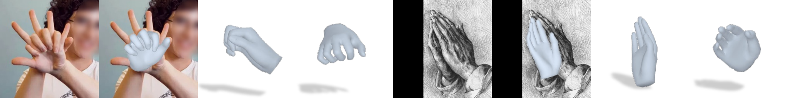
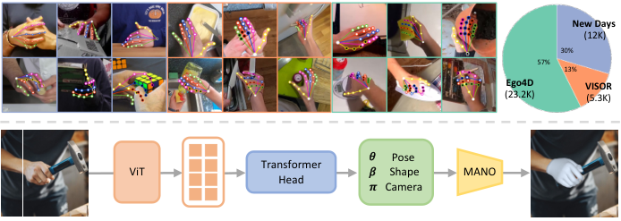
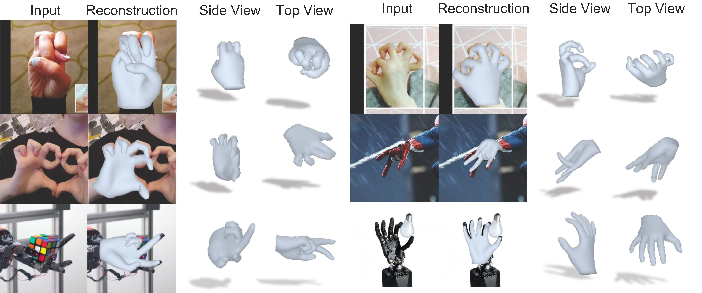
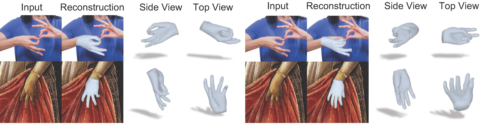